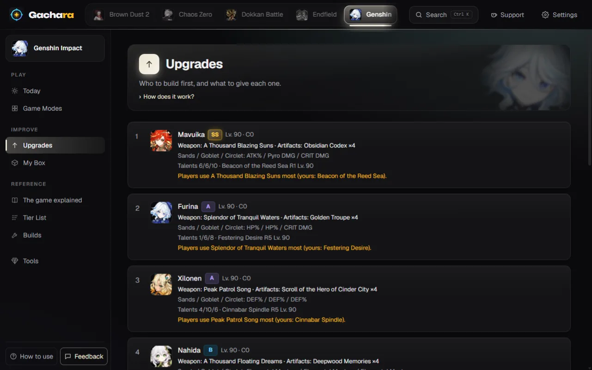

Genshin Impact
Spiral Abyss and Imaginarium Theater teams from your boxI team di Spiral Abyss e Imaginarium Theater dal tuo box
Gachara reads your characters from HoYoLAB's Battle Chronicle, with constellations, talents, weapon and artifacts, and builds a team for each half of Floor 12 with what you have, next to the ones players use most.Gachara legge i tuoi personaggi dal Battle Chronicle di HoYoLAB, con costellazioni, talenti, arma e artefatti, e fa un team per ogni metà del Piano 12 con quello che hai, accanto a quelli più usati dai giocatori.
Free, no ads, no account needed. For Windows, Android, iPhone and the browser.Gratis, senza pubblicità, senza account obbligatorio. Per Windows, Android, iPhone e browser.

What Gachara does for Genshin ImpactCosa fa Gachara per Genshin Impact
Teams made for your boxTeam su misura per il tuo box
Two teams for Spiral Abyss that never share a character, from the most used teams you can build or made for your characters, and the characters players field most in Imaginarium Theater.Due team per lo Spiral Abyss che non condividono mai un personaggio, dai team più usati che puoi fare o su misura per i tuoi personaggi, e i personaggi più schierati nell'Imaginarium Theater.
What to upgradeCosa potenziare
Each character next to the build players use: weapon, artifact set, main stats, levels and talents, with what's missing.Ogni personaggio accanto alla build che usano i giocatori: arma, set di artefatti, statistiche principali, livelli e talenti, con quello che manca.
Pity and Wish historyPity e cronologia dei Wish
The pity of every banner and every pull you made, with your 50/50s won and lost.La pity di ogni banner e tutte le tue pull, con i 50/50 vinti e persi.
Banners, events and codesBanner, eventi e codici
Who is on the banners now and whether you have them, events with the Primogems left to get, the resets and the redeem codes.Chi c'è nei banner adesso e se ce l'hai, gli eventi con i Primogem ancora da prendere, gli azzeramenti e i codici da riscattare.
Safe for your accountSicura per il tuo account
- Gachara only looks at what the game shows on screen, or at the game's official site the way you would by scrolling it.Gachara guarda solo quello che il gioco mostra sullo schermo, o il sito ufficiale del gioco come faresti tu scorrendolo.
- It never reads the game's memory or its network traffic, and it never plays for you.Non legge mai la memoria del gioco né il suo traffico di rete, e non gioca mai al posto tuo.
Try it with your Genshin Impact boxProvala con il tuo box di Genshin Impact
Install it on Windows, Android or iPhone, or open it in your browser right now. It's free.Installala su Windows, Android o iPhone, o aprila subito nel browser. È gratis.